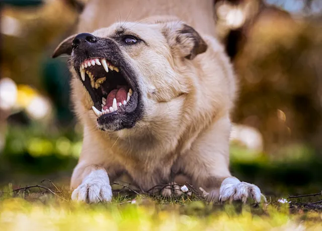

Entender la agresividad en los perros
La agresividad en los perros es un comportamiento que muchas personas enfrentan sin comprender realmente su origen. Aunque resulta preocupante, la agresividad casi nunca aparece sin motivo: suele estar relacionada con miedo, ansiedad, falta de socialización, experiencias traumáticas o incluso dolor físico. Identificar la raíz del problema es fundamental para evitar que la conducta escale. Comprender qué situaciones o estímulos desencadenan la agresión nos permite abordar el problema con responsabilidad y, sobre todo, de forma segura para el animal y su entorno.
"La agresividad no es maldad: es comunicación. Comprenderla es el primer paso para resolverla."
Causas frecuentes y cómo intervenir adecuadamente
Los perros pueden mostrar agresión al proteger recursos, al sentirse amenazados, cuando están enfermos o por acumulación de estrés. Algunos desarrollan conductas agresivas debido a un mal manejo, castigos, o falta de límites claros; otros reaccionan por miedo a situaciones que no saben gestionar. Para intervenir, lo más importante es evitar confrontaciones y no recurrir al castigo, ya que intensifica el problema. La socialización progresiva, el ejercicio físico y mental, el uso del refuerzo positivo y la eliminación de los estímulos que generan tensión son estrategias clave. Además, en todos los casos se recomienda la evaluación de un veterinario para descartar dolor o condiciones médicas.
Recomendaciones para una convivencia segura
Cuando un perro muestra agresividad, la prioridad debe ser proteger a las personas y a otros animales. Supervisarlo en situaciones que suelen detonar el problema, usar correa en espacios públicos e incluso un bozal tipo canasta cuando sea necesario ayuda a prevenir riesgos. Buscar asesoría profesional, de un etólogo o educador canino especializado en conducta, es la medida más segura y efectiva, especialmente cuando la agresividad es recurrente. Con paciencia, constancia y un plan adecuado, es posible mejorar la conducta del perro y restablecer un ambiente de convivencia equilibrado.
Conclusiones finales
- La agresividad siempre tiene una causa identificable: miedo, dolor, estrés o mala socialización.
- El castigo empeora el problema; el refuerzo positivo y la guía profesional son esenciales.
- Supervisión, manejo adecuado y apoyo profesional permiten mejorar la convivencia y la seguridad.